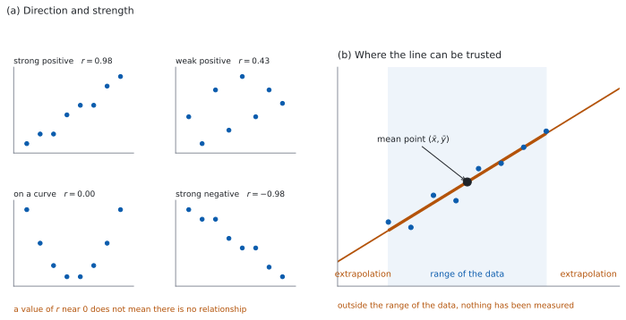
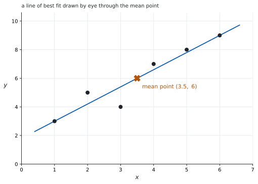

SL 4.4 — Correlation and linear regression（相関と回帰 — Pearson の相関係数）
- bivariate data（\(2\) 変量データ）を scatter diagram（散布図）にかき、相関の向きと強さを述べられる。
- Pearson’s product-moment correlation coefficient \(r\) の値から、相関を英語で述べられる。
- correlation（相関）と causation（因果）を区別して説明できる。
- line of best fit が mean point（平均の点）を通ることを使える。
- regression line of \(y\) on \(x\) の式 \(y = ax + b\) で予測し、\(a\) と \(b\) の意味を場面に即して述べられる。
- extrapolation（外挿）と、\(y\) から \(x\) を予測することの危なさを言える。
このページで散布図と \(r\)、\(y\) on \(x\) の式を出せるようになったら、SL 4.10 に進みます。 4.10 では、同じ \(r\) を \(x\) on \(y\) の式と結びつけ、\(2\) 本の回帰直線を使い分けます。
The idea
1. bivariate data と scatter diagram
bivariate data（\(2\) 変量データ）は、\(1\) つのものについて \(2\) つの量を測ったデータです。生徒 \(1\) 人について「勉強時間」と「点数」を測れば、\((x, y)\) の組が \(1\) つできます。
scatter diagram（散布図）は、その組を点として打った図です。点の並び方から、\(2\) つの量の関係を読みます。
どちらを \(x\) にするかは、問題文が決めます。 ふつう、「先に決まるほう」「こちらを動かして、もう一方がどうなるかを見たいほう」が \(x\)（independent variable）です。「原因のほう」ではありません（第 4 節）。
2. correlation の向きと強さ
読むのは \(2\) つです（図 1 の (a)）。
- 向き … \(x\) が増えると \(y\) も増えるなら positive、減るなら negative。どちらでもなければ no correlation。
- 強さ … 点が直線に近く並んでいるほど strong、ばらけているほど weak。
答案では、この \(2\) つを両方書きます。「moderate negative correlation」のように、強さ・向き・correlation の順に並べます。
3. Pearson の \(r\)
Pearson’s product-moment correlation coefficient \(r\) は、直線への近さを \(1\) つの数にしたものです。
- \(-1 \le r \le 1\) です（\(x\) の値がすべて同じ、または \(y\) の値がすべて同じ、という場合を除きます。そのとき \(r\) は定まりません）。
- \(r > 0\) なら positive、\(r < 0\) なら negative。
- \(\lvert r \rvert\) が \(1\) に近いほど strong、\(0\) に近いほど weak。
- \(r = \pm 1\) は、すべての点がちょうど \(1\) 本の直線上にあるときだけです（水平でも垂直でもない直線）。
- 点が \(2\) つしかなければ \(r\) はかならず \(\pm 1\) になります。 強さの判断には意味がありません。
| \(\lvert r \rvert\) の目安 | 述べ方 |
|---|---|
| \(0.8\) 以上 | strong |
| \(0.5\) 以上 \(0.8\) 未満 | moderate |
| \(0.5\) 未満 | weak |
この目安は絶対の線引きではありません。 境目の値については、採点でも幅をもって見られます。シラバスが使う語は strong・weak・no correlation で、moderate はそのあいだを言うための語です。
critical value が与えられていても、強さの述べ方の線引きではありません。 それは「回帰直線を使ってよいほど相関が強いか」を判断するためのものです。
点がきれいな放物線の上に並んでいても、\(r\) は \(0\) に近くなることがあります。関係がないのではなく、直線の関係がないだけです。
だから、\(r\) を出す前に散布図を見ます。\(r\) が意味をもつのは、点がおおよそ直線に沿っているときだけです。
\(r\) の式は公式集にありません。 値は電卓で出します。
4. correlation は causation ではありません
\(r\) が \(1\) に近くても、一方が他方を引き起こしているとはかぎりません。理由は \(3\) つ考えられます。
- 偶然。
- 向きが逆。\(y\) が \(x\) を引き起こしているのかもしれません。
- 第 \(3\) の変数（confounding variable）が、両方を動かしている。
答案では、「相関は因果を示さない」だけでは足りません。どんな第 \(3\) の変数がありうるかを \(1\) つ挙げると、説明になります。
5. line of best fit と mean point
目で直線を引くときは、点のまん中を通るように引きます。目印になるのが mean point（平均の点）です。
\[ (\bar{x}, \ \bar{y}) \tag{1}\]
回帰直線は、必ずこの点を通ります。 目で引くときも、この点を通しておけば大きくは外れません。
mean point という項目は公式集にありません。 平均そのものの式 \(\bar{x} = \dfrac{\sum f_i x_i}{n}\) は 4.3 の欄にあります（SL 4.3）。ここでは \(x\) の平均と \(y\) の平均を組にするだけです。
6. regression line of \(y\) on \(x\)
regression line of \(y\) on \(x\)（\(y\) の \(x\) への回帰直線）は、\(y\) を \(x\) から予測するための直線です。形は
\[ y = ax + b \tag{2}\]
です。\(a\) と \(b\) の値は電卓で出します。 式は公式集にありません。
\(a\) と \(b\) には、場面ごとの意味があります。
| 記号 | 意味 | 述べ方の型 |
|---|---|---|
| \(a\)（gradient） | \(x\) が \(1\) 増えるごとに、\(y\) が平均して \(a\) 変わる | 「\(x\) が \(1\) <単位> 増えるごとに、\(y\) は平均して \(a\) <単位> 増える（減る）」 |
| \(b\)（\(y\)-intercept） | \(x = 0\) のときに予測される \(y\) | 「\(x = 0\) のときの \(y\) の予測値」 |
単位を付けて述べます。 「\(a\) は \(4.2\) です」では、何のことか伝わりません。
7. 予測に使うときの注意
\(2\) つあります。
(1) extrapolation（外挿）。 データのある範囲の外で予測すると、あてになりません（図 1 の (b)）。範囲の中で成り立っていた直線の関係が、外でも続く保証はないからです。
\(b\)（\(y\) 切片）も、\(x = 0\) がデータの範囲の外なら、外挿の値です。「\(x = 0\) のときの実際の値」として述べないでください。
(2) \(y\) から \(x\) を予測しないでください。 \(y = ax + b\) を \(x\) について解き直しても、それは「\(x\) を \(y\) から予測する直線」にはなりません。回帰直線 \(y = ax + b\) は、\(y\) の側のずれだけを小さくするように決めた直線だからです。
\(x\) を \(y\) から予測したいときは、別の直線（regression line of \(x\) on \(y\)）を使います（SL 4.10）。

Why it works
なぜ、回帰直線は mean point を通るのでしょうか。 回帰直線は、\(y\) の方向のずれ（residual）の \(2\) 乗の合計がいちばん小さくなるように決めます。
いま、ずれの合計が \(S \ne 0\) だったとしましょう。直線を \(\dfrac{S}{n}\) だけ上下に平行移動すると、ずれの \(2\) 乗の合計はかならず小さくなります。いちばん小さいところではもう小さくできないので、ずれの合計は \(0\) です。
ずれの合計が \(0\) ということは、\(y\) の値の合計と、直線が予測する値の合計が等しいということです。両方を \(n\) で割れば、
\[ \bar{y} = a\bar{x} + b \]
になります。これは「点 \((\bar{x}, \bar{y})\) が直線の上にある」と言っているのと同じです。
なぜ、\(y\) から \(x\) を予測してはいけないのでしょうか。 回帰直線が小さくしているのは、縦方向のずれだけです。横方向のずれは、まったく見ていません。
だから、同じデータでも「\(y\) を \(x\) から」と「\(x\) を \(y\) から」では、別の直線になります。\(2\) 本が一致するのは、点がちょうど \(1\) 本の直線（水平でも垂直でもないもの）に乗っているとき、すなわち \(\lvert r \rvert = 1\) のときだけです。
なぜ、外挿があてにならないのでしょうか。 直線は、データのある範囲での近似です。範囲の外に何があるかは、データが何も言っていません。実際には曲がっているかもしれませんし、別の要因が効きはじめるかもしれません。
たとえば「肥料の量と収穫量」は、ある範囲では増えますが、入れすぎれば減ります。範囲の中の直線をのばすと、増え続けるという誤った予測になります。
なぜ、相関だけでは因果が言えないのでしょうか。 \(r\) が測っているのは、\(2\) つの列の数字の並び方だけです。どちらが先に起きたか、間に何があるかは、数字に入っていません。因果を言うには、実験や、別の根拠が要ります。
Worked examples
問題文は英語です。意味が理解できなかったら、問題文の下の「日本語訳」を開いてください。解説は日本語です。
\(r\) と回帰直線の値は、電卓で出すものです（シラバスの指定）。だから、このページでは値が問題文に与えられています。計算は手でできます。
\(r\) や回帰直線の係数を求めるのは、GDC を使う場面です（Paper 2）。 Paper 1 では、散布図の読み取り、相関の強さと向きの説明、相関と因果のちがいなどが問われます。単元全体が Paper 1 の対象外ではありません。
例題 1 For \(8\) students, \(x\) is the number of hours of revision done for a test and \(y\) is the mark scored out of \(100\). Every student in the sample revised for between \(2\) and \(9\) hours. Technology gives \(r = 0.87\) and the regression line of \(y\) on \(x\) as \(y = 4.2x + 38\).
(a) Describe the correlation between \(x\) and \(y\).
(b) Interpret the value \(4.2\) in the context of the question.
(c) Use the equation to estimate the mark of a student who revises for \(6\) hours.
(d) Explain why the value \(38\) should not be used as the mark predicted for a student who does no revision.
日本語訳
\(8\) 人の生徒について、\(x\) をテストのための勉強時間、\(y\) を \(100\) 点満点の得点とします。標本のどの生徒も、\(2\) 時間から \(9\) 時間のあいだ勉強しました。電卓によると \(r = 0.87\)、\(y\) の \(x\) への回帰直線は \(y = 4.2x + 38\) です。
(a) \(x\) と \(y\) の相関について述べなさい。
(b) この場面における \(4.2\) という値の意味を述べなさい。
(c) この式を使って、\(6\) 時間勉強した生徒の得点を推定しなさい。
(d) \(38\) という値を、まったく勉強しない生徒の予測点として使うべきでない理由を説明しなさい。
(a) Describe なので、強さと向きの両方を書きます（第 2 節）。\(r = 0.87\) は正で、\(0.8\) 以上です（表 1）。
試験ではこう書く
There is a strong positive correlation between the number of hours of revision and the mark scored: students who revised for longer tended to score higher marks.
（勉強時間と得点のあいだには強い正の相関がある。長く勉強した生徒ほど高い点をとる傾向があった、という意味です。）
(b) Interpret なので、単位を付けて場面のことばで書きます（表 2）。
試験ではこう書く
For each extra hour of revision, the mark scored increases by \(4.2\) marks on average. It is an average rate for this group of students, not a guarantee for any one student.
（勉強時間が \(1\) 時間増えるごとに、得点は平均して \(4.2\) 点上がる。これはこの生徒たちについての平均的な割合であって、\(1\) 人ひとりについて保証されるものではない、という意味です。）
(c) \(x = 6\) を代入します（式 2）。
\[ y = 4.2(6) + 38 = 25.2 + 38 = 63.2 \]
(d) Explain why なので、英語で理由を書きます。
試験ではこう書く
The value \(38\) is the value of \(y\) when \(x = 0\), but no student in the sample revised for fewer than \(2\) hours. Using the line at \(x = 0\) is an extrapolation: the data give no evidence that the straight-line relationship still holds there, so the figure of \(38\) marks is not supported.
（\(38\) は \(x = 0\) のときの \(y\) の値だが、標本にはそもそも \(2\) 時間より短く勉強した生徒がいない。\(x = 0\) で直線を使うのは外挿であり、そこでも直線の関係が成り立つ証拠はデータにないので、\(38\) 点という数字には根拠がない、という意味です。）
検算（(c) について）。 範囲を見ます。 \(x = 6\) は \(2\) から \(9\) の中なので、これは補間です ✓ 予測を使ってよい範囲です。
検算（(c) について、大きさ）。 \(1\) 時間ちがいで比べます。 \(x = 5\) なら \(4.2(5) + 38 = 59\)、\(x = 7\) なら \(67.4\) です。\(63.2\) はそのあいだにあり、差はどちらも \(4.2\) です ✓ gradient と合っています。
検算（(a) について）。 符号を見ます。 \(r = 0.87 > 0\) なので positive です ✓ 回帰直線の gradient \(4.2\) も正で、向きが一致しています。
検算（(d) について）。 範囲の端で見ます。 データの下端 \(x = 2\) での予測は \(4.2(2) + 38 = 46.4\) です ✓ \(x = 0\) はそこからさらに \(2\) 時間ぶん外側で、データが何も言っていない場所です。
(a) strong positive correlation
(b) each extra hour of revision increases the mark by \(4.2\) marks on average
(c) \[y = 4.2(6) + 38 = 63.2\]
(d) \(38\) is the prediction at \(x = 0\), which is outside the data range \(2 \le x \le 9\), so it is an extrapolation
例題 2 The table shows \(8\) pairs of values.
| \(x\) | \(1\) | \(2\) | \(3\) | \(4\) | \(5\) | \(6\) | \(7\) | \(8\) |
|---|---|---|---|---|---|---|---|---|
| \(y\) | \(6\) | \(6\) | \(8\) | \(12\) | \(14\) | \(14\) | \(16\) | \(20\) |
Technology gives the regression line of \(y\) on \(x\) as \(y = 2x + 3\) and \(r = 0.977\).
(a) Find the mean point \((\bar{x}, \bar{y})\).
(b) Show that the regression line passes through the mean point.
(c) Use the equation to estimate \(y\) when \(x = 5\), and compare your answer with the value in the table.
(d) State what the value \(r = 0.977\) tells you about the points.
日本語訳
表は \(8\) 組の値を示しています。
| \(x\) | \(1\) | \(2\) | \(3\) | \(4\) | \(5\) | \(6\) | \(7\) | \(8\) |
|---|---|---|---|---|---|---|---|---|
| \(y\) | \(6\) | \(6\) | \(8\) | \(12\) | \(14\) | \(14\) | \(16\) | \(20\) |
電卓によると、\(y\) の \(x\) への回帰直線は \(y = 2x + 3\)、\(r = 0.977\) です。
(a) 平均の点 \((\bar{x}, \bar{y})\) を求めなさい。
(b) 回帰直線が平均の点を通ることを示しなさい。
(c) この式を使って \(x = 5\) のときの \(y\) を推定し、表の値と比べなさい。
(d) \(r = 0.977\) という値が、点についてどんなことを示しているかを述べなさい。
(a) それぞれの平均を出します（式 1）。
\[ \bar{x} = \frac{1+2+3+4+5+6+7+8}{8} = \frac{36}{8} = 4.5 \]
\[ \bar{y} = \frac{6+6+8+12+14+14+16+20}{8} = \frac{96}{8} = 12 \]
(b) Show that なので、代入して両辺が合うことを書きます。
\[ 2(4.5) + 3 = 9 + 3 = 12 = \bar{y} \]
だから \((4.5, 12)\) は直線の上にあります。
(c) \(x = 5\) を代入します。
\[ y = 2(5) + 3 = 13 \]
表の値は \(14\) なので、予測は \(1\) だけ小さく出ています。
(d) \(r = 0.977\) は \(1\) にとても近い正の値です。
\[ \text{points lie very close to a straight line with positive gradient} \]
検算（(a) について）。 \(1\) から \(8\) の平均で見ます。 等間隔に並んだ \(8\) 個なので、平均は両端の平均 \(\dfrac{1+8}{2} = 4.5\) です ✓
検算（(b) について）。 平均の点から \(1\) つ動かして見ます。 \(x\) が \(4.5\) から \(5.5\) へ \(1\) 増えると、直線は \(y\) を \(2\) 増やして \(14\) と予測します ✓ 傾き \(2\) と合っており、\((4.5, 12)\) が直線上の点であることと矛盾しません。
検算（(c) について）。 ずれの向きを見ます。 \(x = 2\) では予測 \(7\)、表は \(6\) で \(-1\)。\(x = 5\) では予測 \(13\)、表は \(14\) で \(+1\) です ✓ ずれは \(+\) と \(-\) の両方にあり、どちらか一方に偏っていません。
検算（(d) について）。 直線からのずれで見ます。 \(y = 2x + 3\) が予測する値は \(5, 7, 9, 11, 13, 15, 17, 19\) で、表との差はどれも \(1\) です ✓ \(y\) の幅 \(20 - 6 = 14\) に対して差が \(1\) しかないので、\(r\) が \(1\) に近いのと合っています。
(a) \[\bar{x} = \frac{36}{8} = 4.5, \qquad \bar{y} = \frac{96}{8} = 12\]
(b) \[2(4.5) + 3 = 12 = \bar{y}\] so the line passes through \((4.5, 12)\)
(c) \[y = 2(5) + 3 = 13\] the table gives \(14\), so the line predicts \(1\) less
(d) the points lie very close to a straight line with positive gradient
例題 3 Over one summer, the weekly sales of ice cream at a beach and the weekly number of people rescued from the sea were recorded. Technology gives \(r = 0.91\).
(a) State whether the correlation is positive or negative.
(b) Explain why this does not show that buying ice cream causes people to need rescuing.
(c) Suggest a third variable that could explain the correlation, and describe how it would affect both variables.
(d) For a different pair of variables the value of \(r\) is \(0.05\). State what this suggests about a linear relationship between them.
日本語訳
ある夏のあいだ、海岸でのアイスクリームの週ごとの売上と、海から救助された人数の週ごとの記録がとられました。電卓によると \(r = 0.91\) です。
(a) 相関が正か負かを述べなさい。
(b) これがアイスクリームを買うことで人が救助を必要とすることを示していない理由を説明しなさい。
(c) この相関を説明しうる第 \(3\) の変数を提案し、それが両方の変数にどう影響するかを述べなさい。
(d) 別の \(2\) つの変数について \(r\) の値が \(0.05\) でした。この値が、\(2\) つの変数の直線的な関係について何を示唆するかを述べなさい。
(a) \(r = 0.91 > 0\) なので positive です。
(b) Explain why なので、英語で理由を書きます（第 4 節）。
試験ではこう書く
A correlation only shows that the two quantities rose and fell together over the summer. It gives no information about which quantity affected the other, or whether either did. The two could be linked through a third quantity that changes both, or the agreement could be a coincidence, so causation cannot be concluded from \(r\) alone.
（相関が示しているのは、その夏のあいだ \(2\) つの量がともに上下したということだけである。どちらがどちらに影響したのか、そもそも影響があったのかについては、何も言っていない。\(2\) つは両方を動かす第 \(3\) の量を通じてつながっているかもしれないし、一致は偶然かもしれない。よって \(r\) だけから因果は結論できない、という意味です。）
(c) Suggest と describe なので、変数を挙げ、両方への効き方を書きます。
試験ではこう書く
The temperature is a possible third variable. In hot weeks more people buy ice cream, and in the same hot weeks more people go into the sea, so more people are in a position to need rescuing. The temperature would then raise both quantities at once, so a correlation can appear even if neither one affects the other.
（気温が第 \(3\) の変数として考えられる。暑い週にはアイスクリームを買う人が増え、同じ暑い週には海に入る人も増えるので、救助を必要としうる人も増える。気温が \(2\) つの量を同時に押し上げているとすれば、どちらか一方が他方に影響していなくても相関は生じうる、という意味です。）
(d) \(r\) が \(0\) に近いので、直線的な関係はほとんどないと言えます。ただし、関係がまったくないとは言えません（第 3 節）。
\[ \text{little or no linear relationship} \]
検算（(a) について）。 場面で見ます。 暑い週は売上も救助も多く、涼しい週はどちらも少ないはずです ✓ ともに増えるので positive です。
検算（(b) について）。 向きを入れかえてみます。 「救助が増えるとアイスが売れる」と言っても、同じ \(r\) が出ます ✓ \(r\) は向きを区別しないので、因果の根拠になりません。
検算（(d) について）。 曲線の場合を考えます。 点がきれいな放物線に乗っていても \(r\) は \(0\) に近くなりえます ✓ だから「関係がない」とまでは言えません。
(a) positive
(b) correlation shows only that the two rose and fell together; it says nothing about which affects which, and a third variable or coincidence could produce it
(c) temperature: in hot weeks more ice cream is bought and more people swim, so more people need rescuing
(d) little or no linear relationship between them
例題 4 For a set of bivariate data the values of \(x\) lie between \(20\) and \(60\). The regression line of \(y\) on \(x\) is \(y = 0.8x + 12\), and the mean point is \((40, 44)\).
(a) Find the value of \(y\) predicted when \(x = 45\).
(b) Explain why the value predicted when \(x = 100\) should not be trusted.
(c) A student wants to predict \(x\) when \(y = 40\), and rearranges the equation to obtain \(x = 35\). Comment on whether this prediction is reliable.
(d) Verify that the regression line passes through the mean point.
日本語訳
ある \(2\) 変量データについて、\(x\) の値は \(20\) から \(60\) のあいだにあります。\(y\) の \(x\) への回帰直線は \(y = 0.8x + 12\) で、平均の点は \((40, 44)\) です。
(a) \(x = 45\) のときに予測される \(y\) の値を求めなさい。
(b) \(x = 100\) のときの予測値を信頼すべきでない理由を説明しなさい。
(c) ある生徒が \(y = 40\) のときの \(x\) を予測しようとして、式を変形して \(x = 35\) を得ました。この予測が信頼できるかどうかについて述べなさい。
(d) 回帰直線が平均の点を通ることを確かめなさい。
(a)
\[ y = 0.8(45) + 12 = 36 + 12 = 48 \]
(b) Explain why なので、英語で理由を書きます（第 7 節）。
試験ではこう書く
The values of \(x\) in the data lie between \(20\) and \(60\), so \(x = 100\) is well outside that range and the prediction is an extrapolation. The straight line was fitted only to the region covered by the data, and nothing in the data shows that the same linear relationship continues beyond \(x = 60\).
（データの \(x\) の値は \(20\) から \(60\) のあいだにあるので、\(x = 100\) はその範囲のはるか外であり、この予測は外挿である。直線はデータのある範囲だけに当てはめたものであり、同じ直線の関係が \(x = 60\) の先でも続くことを示すものは、データの中に何もない、という意味です。）
(c) Comment on なので、英語で述べます。
試験ではこう書く
The line \(y = 0.8x + 12\) is the regression line of \(y\) on \(x\), which is chosen to make the errors in \(y\) small, not the errors in \(x\). Rearranging it does not turn it into the line that predicts \(x\) from \(y\); that is a different line, the regression line of \(x\) on \(y\). The value \(x = 35\) is therefore not a reliable prediction.
（直線 \(y = 0.8x + 12\) は \(y\) の \(x\) への回帰直線であり、\(y\) の側の誤差を小さくするように選ばれていて、\(x\) の側の誤差については選ばれていない。式を変形しても、\(y\) から \(x\) を予測する直線にはならない。それは別の直線、\(x\) の \(y\) への回帰直線である。よって \(x = 35\) は信頼できる予測ではない、という意味です。）
(d)
\[ 0.8(40) + 12 = 32 + 12 = 44 = \bar{y} \]
検算（(a) について）。 範囲を見ます。 \(x = 45\) は \(20\) から \(60\) の中なので補間です ✓
検算（(a) について、mean point から）。 平均の点からのずれで見ます。 \(x\) が \(40\) から \(45\) へ \(5\) 増えると、\(y\) は \(0.8 \times 5 = 4\) 増えて \(44 + 4 = 48\) です ✓ (a) と一致します。
検算（(b) について、どれだけ外か）。 範囲の幅と比べます。 データの幅は \(60 - 20 = 40\) で、\(x = 100\) は上端からさらに \(40\) 外、つまり幅と同じだけ外です ✓ わずかな外挿ではありません。
検算（(c) について）。 \(x = 35\) を直線に入れ直します。 \(0.8(35) + 12 = 40\) となり、代数としては合っています ✓ 誤りは計算ではなく、この直線を逆向きに使ったことです。
(a) \[y = 0.8(45) + 12 = 48\]
(b) \(x = 100\) is outside the data range \(20 \le x \le 60\), so the prediction is an extrapolation
(c) the line of \(y\) on \(x\) minimises errors in \(y\), not in \(x\); predicting \(x\) from \(y\) needs the regression line of \(x\) on \(y\), so \(x = 35\) is not reliable
(d) \[0.8(40) + 12 = 44 = \bar{y}\]
Common errors
Describe には両方が要ります（第 2 節）。「positive correlation」だけでは足りません。
\(r\) は並び方しか測っていません（第 4 節）。第 \(3\) の変数を \(1\) つ挙げて説明します。
「\(x\) が \(1\) <単位> 増えるごとに、\(y\) が平均して \(a\) <単位>」の型で書きます（表 2）。
\(x = 0\) がデータの範囲の外なら、それは外挿です（第 7 節）。
\(y\) の \(x\) への回帰直線は、逆向きには使えません（第 7 節）。別の直線が要ります。
\(r\) が測るのは直線への近さだけです（第 3 節）。曲線の関係は見えません。
Using your GDC (TI-Nspire CX II)
この節は Paper 2 のためのものです。 Paper 1 では電卓を使えません。
シラバスは、\(r\) も回帰直線も電卓で求めるものと決めています。だから、操作を正確に覚えることがそのまま得点につながる項目です。
1. \(2\) 列に入れて回帰を出す
ctrl + doc → Add Lists & Spreadsheet列を \(2\) つ作り、それぞれに名前（hours、score など）を付けてデータを並べます。\(1\) 行が \(1\) 組です。
menu → Statistics → Stat Calculations → Linear Regression (mx+b)\(x\) の列と \(y\) の列を、\(x\)・\(y\) の順に指定します。
2. 結果の読み方
| 表示 | 意味 | IB の記号 |
|---|---|---|
m |
傾き | \(a\) |
b |
\(y\) 切片 | \(b\) |
r |
相関係数 | \(r\) |
m が IB の \(a\) です
電卓は \(y = mx + b\) の形で返します。IB は \(y = ax + b\) と書きます。文字が入れかわっているので、答案に写すときに注意してください。
\(b\) はどちらも \(y\) 切片です。ここは同じです。
3. 散布図をかいて直線を重ねる
ctrl + doc → Add Data & Statistics横軸に \(x\) の列、縦軸に \(y\) の列を置くと散布図になります。そのあと
menu → Analyze → Regression → Show Linear (mx+b)で回帰直線が重なります。\(r\) を書く前に、この図を見てください（第 3 節）。点が曲線に沿っているなら、\(r\) は使えません。
Exercises
各問題に、折りたたみが \(3\) つ付いています。日本語訳、解答例（答案用紙に書くべきこと。英語です）、解説（なぜそうなるか。日本語です）。
まず自分で解いて、次に解答例と見くらべてください。解説は、合わなかったときだけ開けば十分です。
1 The table shows six pairs of values.
| \(x\) | \(1\) | \(2\) | \(3\) | \(4\) | \(5\) | \(6\) |
|---|---|---|---|---|---|---|
| \(y\) | \(3\) | \(5\) | \(4\) | \(7\) | \(8\) | \(9\) |
(a) Draw a scatter diagram, mark the mean point on it, and draw a line of best fit by eye through the mean point. Describe the correlation.
(b) Use your calculator to find Pearson’s product-moment correlation coefficient \(r\), correct to three significant figures.
(c) Use your calculator to find the equation of the regression line of \(y\) on \(x\). State how you check that six pairs of values have been entered.
日本語訳
表は \(6\) 組の値を示しています。
| \(x\) | \(1\) | \(2\) | \(3\) | \(4\) | \(5\) | \(6\) |
|---|---|---|---|---|---|---|
| \(y\) | \(3\) | \(5\) | \(4\) | \(7\) | \(8\) | \(9\) |
(a) 散布図をかき、平均の点を記入し、その点を通る近似直線を目で引きなさい。相関について述べなさい。
(b) 電卓を使って Pearson の積率相関係数 \(r\) を、有効数字 \(3\) 桁で求めなさい。
(c) 電卓を使って、\(y\) on \(x\) の回帰直線の式を求めなさい。\(6\) 組ぶん入力できているかをどう確かめるかも書きなさい。
(a)
\[\bar{x} = \frac{21}{6} = 3.5, \qquad \bar{y} = \frac{36}{6} = 6\]
scatter diagram with the six points, the mean point \((3.5, 6)\) marked, and a straight line drawn through it among the points

strong positive correlation
(b)
\[r = 0.949 \quad (3 \text{ s.f.})\]
(c) the screen shows \(n = 6\)
\[y = 1.2x + 1.8\]
(a) まず平均を出し、その点を打ってから直線を引きます（第 5 節）。点は右上がりに並び、直線の近くに集まっています。
(b)(c) \(x\) と \(y\) を別々のリストに入れます。 そのうえで Two-Variable Statistics（\(r\)）と Linear Regression (mx+b)（\(y\) on \(x\) の式）を使います。\(x\) のリストと \(y\) のリストを入れかえないでください。 入れかえると、\(x\) on \(y\) の式が出ます（SL 4.10）。
入力の数は、画面の \(n\) で確かめます。 \(n = 6\) でなければ、どこかの行が空になっているか、余分な行が入っています。
検算（(a) の平均の点）。 \(x\) は \(1\) から \(6\) でまん中が \(3.5\)、\(y\) は \(3\) から \(9\) でまん中あたりが \(6\) です ✓
検算（引いた直線）。 点を上下に数えます。 引いた直線の上と下のどちらにも点があれば、大きくは外れていません ✓ すべての点が片側にあったら、引き直します。
検算（(b) の符号）。 点が右上がりなので \(r > 0\) のはずです。\(0.949 > 0\) ✓ また \(-1 \le r \le 1\) の中に入っています ✓
検算（(c) が平均の点を通るか）。 \(1.2(3.5) + 1.8 = 4.2 + 1.8 = 6 = \bar{y}\) ✓ \(y\) on \(x\) の直線は、必ず平均の点を通ります（第 5 節）。ここがずれていたら、入力を疑ってください。
検算（傾きの符号）。 \(r > 0\) と傾き \(1.2 > 0\) は、同じ向きを表しています ✓ 符号がちがったら、どちらかがまちがいです。
目で引く直線に、\(1\) つの正解はありません。 ただし、平均の点は必ず通します。電卓の \(y\) on \(x\) の直線も、同じ点を通ります。
試験ではこう書く
There is a strong positive correlation between \(x\) and \(y\): as \(x\) increases the values of \(y\) increase, and the points lie close to a straight line, so a line of best fit drawn through the mean point \((3.5, 6)\) passes near all six points. The calculator value \(r = 0.949\) is close to \(1\), which agrees with this description.
2 For a set of bivariate data, \(\bar{x} = 7\) and \(\bar{y} = 23\). Show that the regression line \(y = 2.5x + 5.5\) passes through the mean point.
日本語訳
ある \(2\) 変量データについて、\(\bar{x} = 7\)、\(\bar{y} = 23\) です。回帰直線 \(y = 2.5x + 5.5\) が平均の点を通ることを示しなさい。
\[2.5(7) + 5.5 = 17.5 + 5.5 = 23 = \bar{y}\]
so the line passes through \((7, 23)\)
Show that なので、代入して両辺が合うことを書きます（式 1）。
検算。 傾きで見ます。 \(\bar{x} = 7\) から \(x = 9\) へ \(2\) 増えると、\(y\) は \(2.5 \times 2 = 5\) 増えて \(28\) になるはずです。式に入れると \(2.5(9) + 5.5 = 28\) ✓ 同じ値になり、代入の計算に写しまちがいがないと分かります。
「回帰直線は平均の点を通る」は、いつも成り立ちます。 だから、この計算は直線の式の検算にも使えます。
3 The values of \(x\) in a set of data lie between \(5\) and \(25\). The regression line of \(y\) on \(x\) is \(y = 1.4x + 8\). Find the values of \(y\) predicted when \(x = 18\) and when \(x = 40\), and state which of the two predictions is reliable.
日本語訳
あるデータの \(x\) の値は \(5\) から \(25\) のあいだにあります。\(y\) の \(x\) への回帰直線は \(y = 1.4x + 8\) です。\(x = 18\) のときと \(x = 40\) のときに予測される \(y\) の値を求め、どちらの予測が信頼できるかを述べなさい。
\[x = 18: \quad y = 1.4(18) + 8 = 33.2\]
\[x = 40: \quad y = 1.4(40) + 8 = 64\]
only the prediction at \(x = 18\) is reliable; \(x = 40\) is outside the data range \(5 \le x \le 25\)
\(18\) は範囲の中（補間）、\(40\) は範囲の外（外挿）です（第 7 節）。
検算。 どれだけ外か見ます。 データの幅は \(25 - 5 = 20\) で、\(x = 40\) は上端から \(15\) 外です ✓ 幅の \(4\) 分の \(3\) ぶん外に出ています。
両方とも計算はできます。 計算できることと、信頼できることは別です。
4 Two sets of bivariate data have correlation coefficients \(r = -0.85\) and \(r = 0.72\). State which shows the stronger correlation. Justify your answer.
日本語訳
\(2\) つの \(2\) 変量データの相関係数は、\(r = -0.85\) と \(r = 0.72\) です。どちらのほうが強い相関を示すかを述べ、その理由を述べなさい。
\[\lvert -0.85 \rvert = 0.85 > 0.72\]
the set with \(r = -0.85\) shows the stronger correlation; strength is measured by how close \(\lvert r \rvert\) is to \(1\), and the sign gives only the direction
強さを決めるのは \(\lvert r \rvert\) です（第 3 節）。符号は向きだけを表します。
検算。 符号だけ入れかえて考えます。 もし \(2\) つ目が \(-0.72\) だったら、答えは変わるでしょうか。変わりません ✓ 強さは符号によらないので、\(-0.85\) と \(0.72\) の比較でも \(0.85\) と \(0.72\) を見ればよいと分かります。
「正のほうが強い」ではありません。 負の相関も、強いことがあります。
試験ではこう書く
The set with \(r = -0.85\) shows the stronger correlation. The strength of a linear correlation is measured by how close \(\lvert r \rvert\) is to \(1\), and \(0.85\) is closer to \(1\) than \(0.72\) is. The negative sign only tells us that one variable decreases as the other increases; it does not make the correlation weaker.
5 The cost \(C\) dollars of printing \(n\) posters is modelled by the regression line \(C = 2.4n + 15\). Find the cost of printing \(20\) posters. Interpret the value \(2.4\) in the context of the question.
日本語訳
\(n\) 枚のポスターを印刷する費用 \(C\) ドルは、回帰直線 \(C = 2.4n + 15\) でモデル化されています。\(20\) 枚印刷する費用を求めなさい。また、この場面における \(2.4\) の意味を述べなさい。
\[C = 2.4(20) + 15 = 48 + 15 = 63\]
\(2.4\): each extra poster adds \(\$2.4\) to the cost on average
\(1\) つ目は代入、\(2\) つ目は gradient の意味です（表 2）。
検算。 \(1\) 枚ぶんで見ます。 \(19\) 枚なら \(2.4(19) + 15 = 60.6\) です ✓ \(20\) 枚との差は \(2.4\) ドルで、gradient と一致します。
検算（切片）。 \(n = 0\) なら \(C = 15\) です ✓ \(2.4\) が「\(1\) 枚あたり」、\(15\) が「枚数によらない部分」を表しています。
逆に「\(51\) ドルで何枚か」を求めるのは、別の話です。 それは \(y\) から \(x\) を予測することにあたるので、この直線ではできません（第 7 節）。
試験ではこう書く
The value \(2.4\) is the gradient of the regression line: for each extra poster printed, the cost increases by \(\$2.4\) on average. It is an average rate over the numbers of posters in the data, not a fixed price that is guaranteed for every single poster.
6 For a set of bivariate data, technology gives \(r = 0.31\). Describe the correlation.
日本語訳
ある \(2\) 変量データについて、電卓によると \(r = 0.31\) です。相関について述べなさい。
weak positive correlation
Describe なので、強さと向きの両方を書きます（第 2 節）。\(0.31\) は正で、\(0.5\) より小さい値です（表 1）。
検算。 境目と比べます。 weak と moderate の境目は \(0.5\) です（表 1）。\(0.31 < 0.5\) なので weak の側です ✓ また \(0.31 \ne 0\) なので、no correlation でもありません。
「相関がない」とは書きません。 \(r = 0.31\) は \(0\) ではありません。弱い相関はあります。
試験ではこう書く
There is a weak positive correlation between the two variables. The value of \(r\) is positive, so larger values of one variable tend to go with larger values of the other, but \(0.31\) is much closer to \(0\) than to \(1\), so the points are widely scattered about any straight line.
7 The time \(T\) minutes taken to deliver a parcel of mass \(m\) kg is modelled by \(T = 0.65m + 4.2\). Interpret the values \(0.65\) and \(4.2\) in the context of the question.
日本語訳
質量 \(m\) kg の小包を配達するのにかかる時間 \(T\) 分は、\(T = 0.65m + 4.2\) でモデル化されています。この場面における \(0.65\) と \(4.2\) の意味を述べなさい。
\(0.65\): each extra kilogram adds \(0.65\) minutes to the delivery time on average
\(4.2\): the predicted delivery time for a parcel of mass \(0\) kg
単位を付けます（表 2）。\(m\) は kg、\(T\) は分です。
検算。 \(1\) kg 増やして比べます。 \(m = 2\) なら \(T = 5.5\)、\(m = 3\) なら \(T = 6.15\) ✓ 差は \(0.65\) 分です。
\(4.2\) には注意が要ります。 \(0\) kg の小包はありません。実際の値としてではなく、予測値として述べます。
試験ではこう書く
The value \(0.65\) is the gradient: for each extra kilogram of mass, the delivery time increases by \(0.65\) minutes on average. The value \(4.2\) is the intercept: it is the delivery time the model predicts for a parcel of mass \(0\) kg. Since a parcel of zero mass does not exist, \(4.2\) should be read as the fixed part of the time rather than as a real delivery.
8 A regression line is calculated from data in which the values of \(x\) lie between \(10\) and \(50\). A student uses the line to predict the value of \(y\) when \(x = 200\), and reports the answer as a fact. Identify the error, and state what should be said instead.
日本語訳
\(x\) の値が \(10\) から \(50\) のあいだにあるデータから、回帰直線が計算されました。ある生徒がこの直線を使って \(x = 200\) のときの \(y\) を予測し、その答えを事実として報告しました。誤りを指摘し、代わりに何を述べるべきかを答えなさい。
\(x = 200\) is far outside the data range \(10 \le x \le 50\), so the value is an extrapolation and the data give no evidence that the linear model still holds there; it should be reported as unreliable, not as a fact
Identify the error なので、どこが違うのかを名指しします（第 7 節）。計算そのものは正しくできます。
検算。 どれだけ外か数で言います。 データの幅は \(40\) で、\(x = 200\) は上端から \(150\) 外です ✓ 幅の \(3\) 倍以上外に出ています。
「計算がまちがっている」ではありません。 使ってよい範囲を超えたことが誤りです。
試験ではこう書く
The student has extrapolated. The line was fitted to values of \(x\) between \(10\) and \(50\), and \(x = 200\) lies far outside that range, so the data give no evidence that the same linear relationship still holds there. The number obtained may be reported only as what the model predicts, together with a statement that it is unreliable because it lies outside the range of the data.
9 In a study of house fires, the number of fire engines sent to each fire and the amount of damage caused are found to have a strong positive correlation. Explain why this does not show that sending more fire engines causes more damage.
日本語訳
住宅火災の調査で、それぞれの火災に出動した消防車の台数と、生じた被害額とのあいだに強い正の相関が見つかりました。これが「消防車を多く送ると被害が大きくなる」ことを示していない理由を説明しなさい。
the size of the fire is a third variable: a larger fire causes more damage and also brings more fire engines, so the two rise together whether or not the engines affect the damage
Explain why なので、第 \(3\) の変数を挙げます（第 4 節）。ここでは火災の規模です。
検算。 第 \(3\) の変数をそろえてみます。 同じ規模の火災どうしだけで比べたら、台数が多いほど被害が大きい、という関係は残らないはずです ✓ 相関を生んでいるのは火災の規模のほうだと考えられます。
検算（実験）。 「小さい火災にわざと多くの消防車を送る」実験をすれば区別できます ✓ 観察データだけでは決められません。
試験ではこう書く
The size of the fire is a third variable that affects both quantities. A larger fire causes more damage, and a larger fire also causes more fire engines to be sent. Both numbers therefore rise together across the data, which is enough to produce a strong positive correlation even if the number of engines has no effect on the damage at all. Correlation alone cannot establish causation either way.
10 A set of data has regression line of \(y\) on \(x\) given by \(y = 5x + 2\). Comment on whether this equation should be used to estimate the value of \(x\) for a given value of \(y\).
日本語訳
あるデータの \(y\) の \(x\) への回帰直線は \(y = 5x + 2\) です。与えられた \(y\) の値から \(x\) の値を推定するのに、この式を使うべきかどうかについて述べなさい。
no; the line of \(y\) on \(x\) minimises the errors in \(y\) only, so rearranging it does not give the line that predicts \(x\) from \(y\); the regression line of \(x\) on \(y\) should be used instead
Comment on なので、使うべきかどうかと、その理由を書きます（第 7 節）。
検算。 一致する場合を考えます。 \(\lvert r \rvert = 1\)、つまり点がちょうど直線に乗っているときだけ、\(2\) 本の回帰直線は一致します ✓ ふつうは一致しません。
検算（代数）。 \(y = 5x + 2\) から \(x = \dfrac{y - 2}{5}\) と変形すること自体はできます ✓ 誤りは代数ではなく、その直線が何を最小にしているかにあります。
試験ではこう書く
It should not. The regression line of \(y\) on \(x\) is chosen so that the errors measured in the \(y\) direction are as small as possible, and it takes no account of errors in \(x\). Rearranging the equation gives an algebraically valid formula, but not the line that best predicts \(x\) from \(y\). For that, the regression line of \(x\) on \(y\) must be calculated from the data.